1016B10 single cylinder head extension - change gasket
- Path
- Procedures > 10 ENGINE UNIT > 1016 CYLINDER HEAD/S > 1016B cylinder head extension(s) > 1016B10 single cylinder head extension - change gasket
- Kind
- repair procedure (removal / refitting; the operation number is the code)
- Applies to
- engines: 1.3 JTD 16v; all production periods
- Interactive page
- https://sloeber94.github.io/elrnDB-fPnd/en/#/2752562
Applies to: engines: 1.3 JTD 16v; all production periods
 Removing
Removing
 Refitting
RefittingRemove the car from the ramps.
0010T84 coolant for air conditioning system dehydrate and recharge
5530B52 Battery DRIP TRAY/SUPPORT - R.R.
1060G90 diesel injection wiring harness - r r
1. Disconnect the quick-release fitting of the coolant return pipe from the engine coolant reservoir.
Undo the fuel filler cap and remove it to discharge the pressure in the system.
2. Disconnect the rapid connector for the fuel supply pipe from the fuel filter to the pressure pump, fuel filter side.
3. Disconnect the rapid connector for the fuel return pipe from the fuel filter.
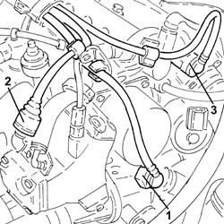
Applies to: engines: 1.3 JTD 16v; all production periods
Loosen the band and disconnect the coolant return pipe from the engine coolant reservoir.
1. Disconnect the rapid connector for the fuel supply pipe from the fuel filter to the pressure pump, fuel filter side.
2. Disconnect the rapid connector for the fuel return pipe, fuel filter side.
3. Disconnect the rapid connector for the intermediate coupling for the fuel return pipe to the reservoir.
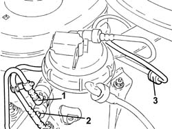
Applies to: engines: 1.3 JTD 16v; all production periods
1. Release the pipes from the fastening bands, undo the bolts (1a), then remove the pipe assembly (1b).
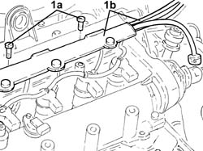
Applies to: engines: 1.3 JTD 16v; all production periods
1. Manually push the clips (1a) and disconnect the return pipe from the injectors to the manifold (1b), injectors side.
2. Loosen the band and disconnect the fuel return pipe from the pressure pump, pressure pump side.
3. Undo the connectors (3a) and remove the pipe from the pressure pump to the fuel manifold (3b).
4. Undo the connectors (4a) and remove the pipe from the fuel manifold to the injectors (4b).
5. Undo the bolts (5a) and remove the mounting brackets (5b) complete with single fuel manifold pipe (5c).
6. Undo the bolt (6a) and remove the cam angle sensor (6b).
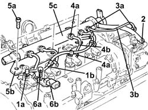
Applies to: engines: 1.3 JTD 16v; all production periods
1. Undo the injector mounting bracket nut.
2. Remove the washer (2a) and tapered washer (2b).
3. Fit the injectors (3a), one at a time, using tools (3b) and (3c).
If the same injectors are being reused, mark the cylinder to which they belong so that they can be correctly refitted.
If new fuel injector(s) are fitted, the self-learning procedure with the Examiner must be carried out.
 | Name | Country |
|---|---|---|
3b | Extractor | 1.870.900.700 |
| Name | Country |
|---|---|---|
3c | Extractor | 1.870.739.000 |
Remove the fuel injectors complete with bracket.
Repeat the above procedure to remove the remaining pair of injectors.
4. Remove the injector seals from the single camshaft housing.
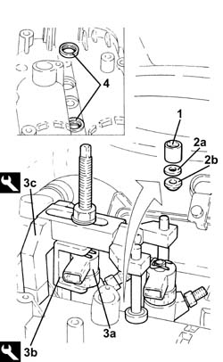
Applies to: engines: 1.3 JTD 16v; all production periods
1. Loosen the band and disconnect the brake servo vacuum pipe, vacuum unit side.
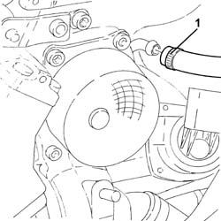
Applies to: engines: 1.3 JTD 16v; all production periods
1. Remove the plug (1a) and, in its place, fit the tool (1b) in its seating on the camshafts.
| Name | Country |
|---|---|---|
1b | Template | 1.871.000.900 |
2. Fit a suitable (8 mm diameter) pin via the special opening in the gearbox.
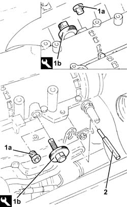
Applies to: engines: 1.3 JTD 16v; all production periods
Fit a suitable bracket for supporting the power unit and secure it using the upper alternator fixing bolt to the mounting.
1. Fit the tool (1a), complete with support mountings (1b), then connect them to the bracket fitted previously using the rod (1c).
| Name | Country |
|---|---|---|
1a | Crossmember | 1.870.595.000 |
| Name | Country |
|---|---|---|
1b | Support mountings | 1.870.650.000 |
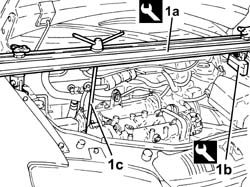
Applies to: engines: 1.3 JTD 16v; all production periods
1. Undo the bolt (1a) and disconnect the connector (1b) for the engine oil vapour recovery pipe from the timing cover.
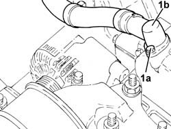
Applies to: engines: 1.3 JTD 16v; all production periods
1092G11 Engine components single drive BELT - R.R. for versions with air conditioning
1092A12 crankshaft pulley - r+r for versions with air conditioner
1. Using the tools (1a) and (1b) for counter-torque, loosen the left hand thread bolt (1c) fastening the pulley support flange to the crankshaft.
| Name | Country |
|---|---|---|
1a | Counter-torque | 1.871.000.200 |
| Name | Country |
|---|---|---|
1b | Support for counter-torque | 1.860.831.000 |
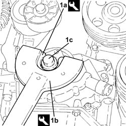
Applies to: engines: 1.3 JTD 16v; all production periods
1. Undo the bolt (1a) and disconnect the pipe from the expansion valve to the compressor (1b), compressor side.
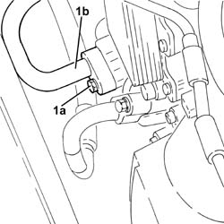
Applies to: engines: 1.3 JTD 16v; all production periods
1088B10 engine cooling tank - r + r
1. Unscrew nuts (1a) securing the flexible block (1b) to the timing end engine mount.
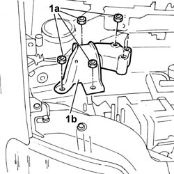
Applies to: engines: 1.3 JTD 16v; all production periods
1. Undo the plug (1a) and the bolt (1b) fixing the exhaust side camshaft toothed drive pulley.
2. Undo the bolts (2a) and remove the cover (2b) complete with gasket.
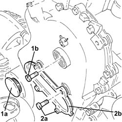
Applies to: engines: 1.3 JTD 16v; all production periods
Release the toothed pulley from the exhaust side camshaft working via the opening in the timing cover adjusting it on the inner rib of the timing cover.
1. Undo the bolts fixing the timing cover to the single camshaft housing.
2. Keep the brackets
3. Undo the bolts (3a) and (3b), then remove the single camshaft housing assembly (3c).
4. Remove the single camshaft housing gasket.
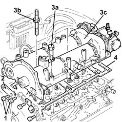
Applies to: engines: 1.3 JTD 16v; all production periods
Refitting
Removing1. Apply Fiat silicone sealant 71713687 or a similar product to the contact area between the cylinder head and the timing chain cover.
2. Position the gasket (2a) on the cylinder head, fitting it on the centring bushes (2b).
3. Apply Fiat silicone sealant 71713687 or a similar product to the gasket between the lower cylinder head and the camshaft housing to the area in contact with the timing cover.
4. Also apply the same sealant to the surface of the timing cover gasket, following the black silicone line on the actual gasket.
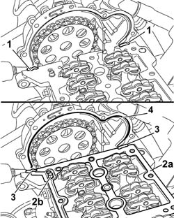
Applies to: engines: 1.3 JTD 16v; all production periods
Working with the camshaft timing tools fitted, position the single camshaft housing taking care not to move the rockers from their position.
Screw in the bolts fixing the single camshaft housing to the cylinder head without tightening them.
1. Screw in and tighten the bolts shown fixing the timing cover to the single camshaft housing to torque.
 | Fastening | Component | Ø | Value (daNm) |
|---|---|---|---|---|
1 | Bolt | TIMING COVER | M6 | 0.8 ÷ 1.0 |
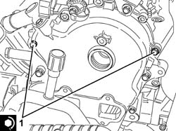
Applies to: engines: 1.3 JTD 16v; all production periods
1. Tighten the six rear bolts fixing the single camshaft housing to a torque of 0.9 daNm.
2. Loosen the bolts (2a) and (2b) fixing the timing cover tightened previously.
3. Continue tightening the bolts fixing the camshaft housing to a torque of 0.9 daNm following the order illustrated in the diagram gradually working towards the timing cover.
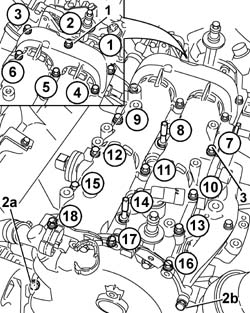
Applies to: engines: 1.3 JTD 16v; all production periods
1. Tighten the bolts fixing the single camshaft housing M8 (1a) to a pre-torque of 1.5 daNm and M7 (1b) to a pre-torque of 1.2 daNm.
2. Tighten the bolts (2a) and (2b) fixing the single camshaft housing to the recommended torque.
| Fastening | Component | Ø | Value (daNm) |
|---|---|---|---|---|
2a | Bolt | CYLINDER HEAD EXTENSION | M8 | (Lower cylinder head side) 2.5 |
| Fastening | Component | Ø | Value (daNm) |
|---|---|---|---|---|
2b | Bolt | CYLINDER HEAD EXTENSION | M7 | (Lower cylinder head side) 1.8 |
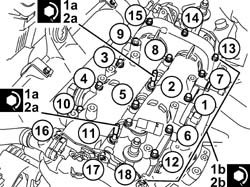
Applies to: engines: 1.3 JTD 16v; all production periods
Fit the remaining bolts fixing the timing cover to the single camshaft housing, then tighten all the bolts fixing the timing cover to the single camshaft housing to the recommended torque.
| Fastening | Component | Ø | Value (daNm) |
|---|---|---|---|---|
- | Bolt | TIMING COVER | M6 | 0.8 ÷ 1.0 |
The single camshaft housing - cylinder head non alignment should not exceed the recommended value.
 | Measurement | Value | |
|---|---|---|---|
- | Upper cylinder head - cylinder head misalignment (mm) | 0.1 |
1. Fasten the tool to the timing cover by the inspection opening so that the pin is in the moving plate rib; using the tool lever, retract the chain tensioner piston so that it is locked.
| Name | Country |
|---|---|---|
1 | Lever | 1.870.900.400 |
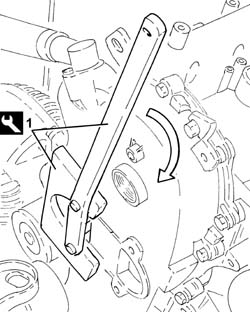
Applies to: engines: 1.3 JTD 16v; all production periods
Fit the toothed pulley on the exhaust side camshaft working via the opening in the timing cover.
Position the bolt fixing the gear and screw it in without tightening it to prevent the gear from being able to accidentally come out of the housing.
Using the tool lever, fully retract the chain tensioner piston to allow the inner spring to be reloaded and ensure that the timing chain tension is correct.
Release the chain tensioner piston checking that it is in contact with the moving plate.
Remove the tool.
| Name | Country |
|---|---|---|
- | Lever | 1.870.900.400 |
1. Using the camshaft timing tools fitted previously, tighten the exhaust side camshaft toothed drive pulley fixing bolt to the recommended torque.
| Fastening | Component | Ø | Value (daNm) |
|---|---|---|---|---|
1 | Bolt | TIMING DUCT PULLEY | M12 | (Exhaust camshaft side) 10.8 ÷ 13.2 |
2. Tighten the plug.
3. Place the tapper cover (3a), complete with gasket, back in its housing and fix it using the bolts (3b).
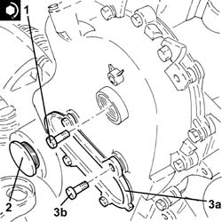
Applies to: engines: 1.3 JTD 16v; all production periods
1. Fit the power unit support flexible mounting (1a) in position and tighten the nuts (1b) to the recommended torque.
| Fastening | Component | Ø | Value (daNm) |
|---|---|---|---|---|
1b | Nut | FRONT RUBBER MOUNTS | M10 | (Rigid support side) 5 |
| Fastening | Component | Ø | Value (daNm) |
|---|---|---|---|---|
1b | Nut | FRONT RUBBER MOUNTS | M10 | (Bodyshell side) 5 |
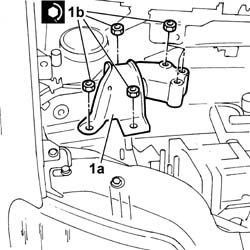
Applies to: engines: 1.3 JTD 16v; all production periods
1088B10 engine cooling tank - r + r
1. Connect the pipe from expansion valve to compressor (1b), compressor side and tighten the bolt (1b) to the recommended torque.
| Fastening | Component | Ø | Value (daNm) |
|---|---|---|---|---|
1b | Bolt | EXPANSION VALVE - COMPRESSOR PIPE | M6 | (Compressor side) 0.7 ÷ 1.1 |
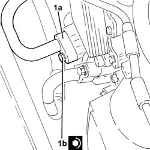
Applies to: engines: 1.3 JTD 16v; all production periods
1. Tighten the left hand bolt (1a) fixing the pulley support flange to the crankshaft to the recommended torque using tools (1b) and (1c) for counter-torque.
| Fastening | Component | Ø | Value (daNm) |
|---|---|---|---|---|
1a | Left hand thread bolt | PULLEY SUPPORT FLANGE ON CRANKSHAFT | M14 | (Crankshaft side) 21.9 ÷ 24.2 |
| Name | Country |
|---|---|---|
1b | Counter-torque | 1.871.000.200 |
| Name | Country |
|---|---|---|
1c | Support for counter-torque | 1.860.831.000 |
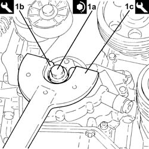
Applies to: engines: 1.3 JTD 16v; all production periods
1092A12 crankshaft pulley - r+r for versions with air conditioner
1092G11 Engine components single drive BELT - R.R. for versions with air conditioning
Remove the pin from the hole on the gearbox.
Remove the timing tools from the camshafts and tighten the plugs.
| Name | Country |
|---|---|---|
- | Gauge | 1.870.896.900 |
Connect the vacuum pipe to the brake servo and tighten the band.
Place the new injector seals in their housings in the single camshaft housing.
1. Place the injectors (1a), complete with brackets (1b), in their seats.
2. Refit in their seatings the tapered washer (2a) and washer (2b).
3. Tighten the nut fixing the injector mounting bracket to the recommended torque.
| Fastening | Component | Ø | Value (daNm) |
|---|---|---|---|---|
3 | Nut | INJECTORS(DIESEL) | M8 | (Cylinder head side) 1.8 ÷ 2.2 |
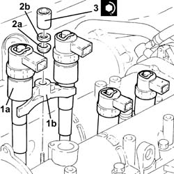
Applies to: engines: 1.3 JTD 16v; all production periods
1. Plact the cam angle sensor (1a) back in its housing and secure it tightening the bolt (1b) to the recommended torque.
| Fastening | Component | Ø | Value (daNm) |
|---|---|---|---|---|
1b | Bolt | CAM ANGLE SENSOR | M6 | (Cylinder head side) 0.6 ÷ 0.8 |
2. Place the mounting brackets (2a), complete with single fuel manifold pipe (2b), in their housings and fasten them using the bolts (2c).
3. Fit the new pipes from the fuel manifold to the injectors and secure them using the connectors without tightening them.
4. Tighten the connectors for the pipes from the fuel manifold to the injectors, injector side, to the recommended torque using a suitable spanner.
| Fastening | Component | Ø | Value (daNm) |
|---|---|---|---|---|
4 | Connector | FUEL MANIFOLD LINE TO INJECTORS | M12 | (Injector side) 2.3 ÷ 2.5 |
5. Tighten the connectors for the pipes between the fuel manifold and the injectors, fuel manifold side, to the recommended torque using a suitable spanner.
| Fastening | Component | Ø | Value (daNm) |
|---|---|---|---|---|
5 | Connector | FUEL MANIFOLD LINE TO INJECTORS | M14 | (Fuel manifold side) 2.7 ÷ 2.9 |
6. Fit a new pipe from the pressure pump to the fuel manifold and fix it using the connectors without tightening them.
7. Tighten the connector for the pipe from the pressure pump to the single fuel manifold, pump side, to the recommended torque using a suitable spanner.
| Fastening | Component | Ø | Value (daNm) |
|---|---|---|---|---|
7 | Connector | PRESSURE PUMP LINE TO FUEL MANIFOLD | M12 | (Pressure pump side) 2.3 ÷ 2.5 |
8. Tighten the connector for the pipe from the pressure pump to the single fuel manifold, pump side, to the recommended torque using a suitable spanner.
| Fastening | Component | Ø | Value (daNm) |
|---|---|---|---|---|
8 | Connector | PRESSURE PUMP LINE TO FUEL MANIFOLD | M14 | (Fuel manifold side) 2.7 ÷ 2.9 |
9. Connect the fuel return pipe from the pressure pump, pressure pump side, and tighten the band.
10. Connect the fuel outlet pipe from the injectors (10a), injector side pushing it until the clips (10b) can be heard clicking.
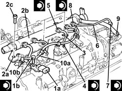
Applies to: engines: 1.3 JTD 16v; all production periods
Remove the tool complete with support blocks, previously fitted to support the power unit.
| Name | Country |
|---|---|---|
- | Crossmember | 1.870.595.000 |
| Name | Country |
|---|---|---|
- | Support mountings | 1.870.650.000 |
Fit in its seating the connector for the engine oil vapour recovery pipe to the chain drive timing cover and tighten the bolts.
Fit in its seating the pipe assembly and secure it using the bolts and bands.
Connect the rapid connector for the intermediate coupling for the tank fuel return pipe.
Connect the rapid connector of the fuel return pipe.
Connect the rapid connector for the fuel supply pipe from the filter to the pressure pump.
Connect the coolant return pipe to the engine coolant reservoir.
Connect the rapid connector for the fuel return pipe to the tanks.
Connect the rapid connector for the fuel supply pipe from the filter to the pressure pump.
Connect the quick-release fitting on the coolant return pipe to the engine coolant reservoir.
1060G90 diesel injection wiring harness - r r
5530B52 Battery DRIP TRAY/SUPPORT - R.R.
0010T84 coolant for air conditioning system dehydrate and recharge
0010T21 coolant check density and top up if necessary
Remove the car from the ramps.
Topics linked from this page (9)
- 0010T21 coolant check density and top up if necessary
- 0010T84 coolant for air conditioning system dehydrate and recharge
- 1060G90 diesel injection wiring harness - r r
- 1088B10 engine cooling tank - r + r
- 1092A12 crankshaft pulley - r+r for versions with air conditioner
- 1092G11 Engine components single drive BELT - R.R. for versions with air conditioning
- 4450B04 right front wheel r r
- 5530B10 battery - r+r
- 5530B52 Battery DRIP TRAY/SUPPORT - R.R.